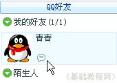
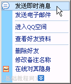
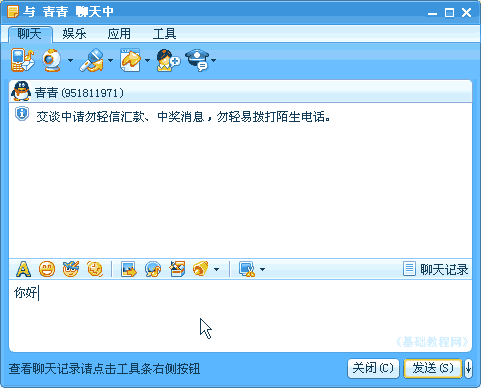
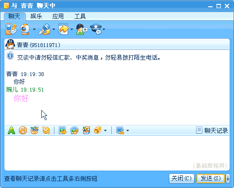
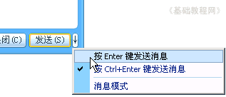
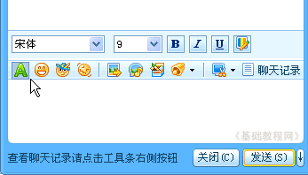

QQ聊天操作基础
一、申请QQ号 返回目录
添加了好友以后，就可以跟他进行聊天了，最常见的是发送文字进行聊天，下面我们来看一个练习；
1、登录QQ
1）双击桌面的QQ图标运行程序，出来一个登录面板，如果自动运行就不用点桌面图标了；

2）按照从上到下的顺序，输入自己的QQ号，在第二行输入密码，如果是公用的机子，可以点击旁边的小键盘来输入，这个比较安全些；

3）下面的自动登录和隐身登录可以先不勾，点击“登录”按钮，登录成功以后就可以显示出QQ面板来；

2、开始聊天
1）在面板中“我的好友”组里，找到上次添加的好友，瞄准双击就可以打开聊天窗口面板，也可以瞄准点右键选“发送消息”命令；
 
2）在出来的聊天窗口中，下面的文本框里输入聊天内容，然后点右下角的“发送”按钮；

3）聊天的内容，显示在上面的文本框里面，一个是自己的一个是对方的，

4）如果每次点“发送”按钮太麻烦，也可以设置成按回车键，点"发送"旁边箭头按钮，选择“按Enter健发送消息”，以后按一下回车键就可以发送消息了；

5）点第一个绿色A按钮，里面可以修改字体、字号大小和颜色，选完以后，再点一下就可以收回来；

6）有新消息是，系统托盘里的QQ头像会闪动，瞄准双击以后，就可以打开聊天窗口
聊天开始别着急，慢慢多练习，用文字来建立自己的形象；
本节学习了注册论坛用户的基本方法，如果你成功地完成了练习，请继续学习下一课内容；
本教程由86团学校TeliuTe制作|著作权所有
基础教程网：http://teliute.org/
美丽的校园……
转载和引用本站内容，请保留作者和本站链接。